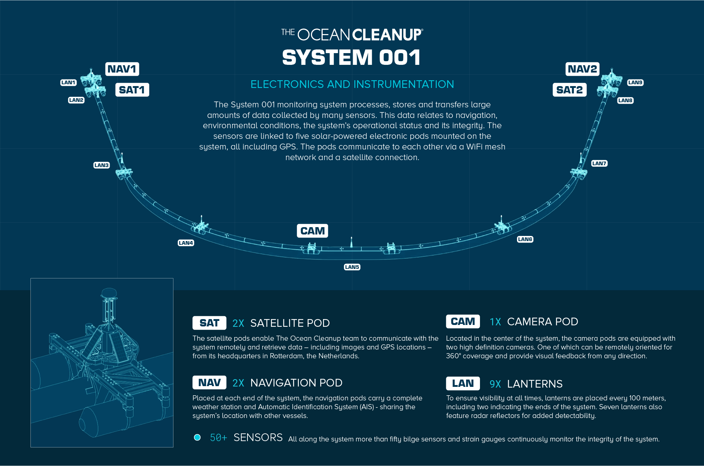

The Ocean Cleanup is non-government engineering environmental organization based in Netherlands, that develops technology to extract plastic pollution from the oceans. The organization was founded in 2013 by Boyan Slat, a Dutch-born inventor-entrepreneur of Croatian origin who serves as its CEO. The approach involves placing barriers in ocean gyres to scoop up marine debris as the barrier is pushed by wind and current. The project aims to launch a total of 60 such systems in the patch by 2021.[4][5][6] They predict this capability could clean up 50% of the debris in the Great Pacific Garbage Patch in five years. The organization conducts scientific research into oceanic plastic pollution. It has conducted two expeditions to the North Pacific Gyre, and publicized scientific papers.
Slat proposed the cleanup project and supporting system in 2012. In October Slat held a TED-talk where he proposed the approach. The initial design consisted of long, floating barriers fixed to the seabed, attached to a central platform shaped like a manta ray for stability. The barriers would direct the floating plastic to the central platform, which would remove the plastic from the water. Slat did not specify the dimensions of this system in the talk
The system uses passive floating structures localized in the ocean gyres, where marine debris tends to accumulate. These structures act as a containment boom. The boom drifts with the wind, waves and ocean currents to capture marine debris. A solid screen underneath the floating pipe catches subsurface debris. The system requires no external energy. The first deployment, System 001, consisted of a 600 metres (2,000 ft) long barrier with a 3 metres (9.8 ft) wide skirt that hangs beneath it.[26] It is made from HDPE, and consists of 50x12 m sections joined together.[27] It was unmanned and incorporates solar-powered monitoring and navigation systems, including GPS, cameras, lanterns and AIS. The barrier and the screen mounting were produced in Austria by an Austrian supplier.